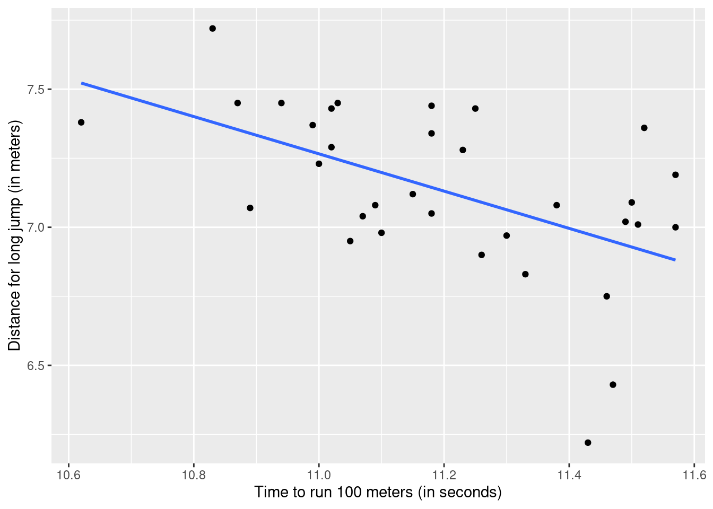

Unsupervised Learning
Learning objectives
- Understand the concept of distance between observations and calculate distances between observations.
- Scale variables and compute z-scores.
- Create and interpret a correlation matrix.
We will use two new pacakges: ade4 to access a built-in dataset and ggcorrplot to visualize a correlation matrix.
Then load the packages for today:
Let’s consider the built-in database olympic which gives the performances of 33 men in the decathlon (10 disciplines) at the Olympic Games in 1988 (Seoul). We will focus on the dataset tab.
# Save the database into your environment, then the dataset
data("olympic")
athletes <- olympic$tab
# Take a quick look at the dataset
head(athletes)The names of the variables might not be very intuitive so let’s rename them:
# Quick cleanup
athletes <- athletes |>
# Translate the variable names (from French!) and reorder
select(time_100 = `100`, time_110 = `110`,
time_400 = `400`, time_1500 = `1500`,
dist_disc = disq, dist_weight = poid,
dist_high_jump = haut, dist_long_jump = long,
dist_javelin = jave, dist_perch = perc)
head(athletes)We will compare the athletes based on their performance in the 10 disciplines/variables.
1. Distances
A key concept in clustering is measuring distances between observations—that is, how ‘far apart’ they are in terms of their features.
a. Euclidean distance
We can consider the Euclidean distance (the most typical distance):
\[ d(x, y) = \sqrt{\sum_{i=1}^{n} (x_i - y_i)^2} \]
Let’s compare the athlete that ranked first (first row) and the one that ranked last (last row) in terms of their performance in running 100 meters:
# Calculate distance by hand
athletes |>
# Only keep the first and last athlete
filter(row_number() == 1 | row_number() == 33) |>
# Find the Euclidean distance = sqrt of the squared differences
summarize(euclidean = sqrt(diff(time_100)^2))The two athletes are at a distance of 0.32 seconds from each other. What if we wanted to also consider their performance in throwing a disc?
Try it! Calculate the Euclidean distance between the first and last athletes also taking into account their performance in throwing a disc. Why is the distance much bigger now? Compare this distance between the first and second athletes.
athletes |>
# Only keep the first and last athlete
filter(row_number() == 1 | row_number() == 33) |>
# Find the Euclidean distance = sqrt of the squared differences
summarize(euclidean = sqrt(diff(time_100)^2 + diff(dist_disc)^2))
athletes |>
# Only keep the first and last athlete
filter(row_number() == 1 | row_number() == 2) |>
# Find the Euclidean distance = sqrt of the squared differences
summarize(euclidean = sqrt(diff(time_100)^2 + diff(dist_disc)^2))We add all the differences for each discipline: these differences are not expressed in the same unit (we should scale the variables so they become “unitless” and comparable). The distance is much bigger between the first and second athletes compared to the distance between the first and last athletes.
b. Scaling
To ensure all variables contribute equally, we usually scale them: we compare an individual value to all the values of the variable (a measure of position).
Let’s scale the performance of the athletes for each discipline by subtracting the mean and divide by the standard deviation (this is called a z-score):
# Scale all variables
athletes_scaled <- athletes |>
scale() |>
as.data.frame()
head(athletes_scaled)Try it! Calculate the mean and standard deviation of the scaled values for the time to run 100 meters. Why does it make sense to get what we get? What does a positive scaled value indicate? a negative value?
athletes_scaled |>
# Calculate the mean and standard deviation
summarize(mean = mean(time_100), sd = sd(time_100))The scaling process positions the data such that the mean is close to 0 and the standard deviation is 1. A positive value indicates that an athlete’s time is above the average time, while a negative value indicates that an athlete’s time is below average (meaning he’s running faster!).
2. Correlation
a. Correlation Coefficient
Another important concept in unsupervised learning is correlation which describes the (linear) relationship between two variables. For example, let’s look at the relationship between time to run 100 meters and length of a long jump:
# Visualize the relationship between time_100 and long_jump
ggplot(athletes, aes(x = time_100, y = dist_long_jump)) +
geom_point() + geom_smooth(method = "lm", se = FALSE) +
labs(x = "Time to run 100 meters (in seconds)",
y = "Distance for long jump (in meters)")
We can use the correlation coefficient to describe the strength and direction of the relationship between those two variables:
# Find the correlation between two variables
cor(athletes$time_100, athletes$dist_long_jump,
use = "pairwise.complete.obs") # ignore missing values## [1] -0.5395676What if we would like to find the correlation coefficients between all pairs of numeric variables? That’s a lot of calculations of the correlation coefficients…
b. Correlation Matrix
We can actually find the correlation between all pairs of variables by not specifying the variables:
## time_100 time_110 time_400 time_1500
## time_100 1.00000000 0.63836152 0.60589539 0.26103415
## time_110 0.63836152 1.00000000 0.54602764 0.14329760
## time_400 0.60589539 0.54602764 1.00000000 0.58728182
## time_1500 0.26103415 0.14329760 0.58728182 1.00000000
## dist_disc -0.04722423 -0.11049751 0.14218823 0.40231998
## dist_disc dist_weight dist_high_jump
## time_100 -0.04722423 -0.20797283 -0.14590755
## time_110 -0.11049751 -0.29571686 -0.30673504
## time_400 0.14218823 0.09458277 -0.08750434
## time_1500 0.40231998 0.26882944 -0.11408736
## dist_disc 1.00000000 0.80635220 0.14742183
## dist_long_jump dist_javelin dist_perch
## time_100 -0.53956763 -0.06471440 -0.38913812
## time_110 -0.47799594 -0.06282187 -0.52154860
## time_400 -0.51532883 0.12035232 -0.31865911
## time_1500 -0.39558645 0.09637566 -0.03149506
## dist_disc 0.04192321 0.44290752 0.34396570
## [ reached getOption("max.print") -- omitted 5 rows ]## time_100 time_110 time_400 time_1500
## time_100 1.00000000 0.63836152 0.60589539 0.26103415
## time_110 0.63836152 1.00000000 0.54602764 0.14329760
## time_400 0.60589539 0.54602764 1.00000000 0.58728182
## time_1500 0.26103415 0.14329760 0.58728182 1.00000000
## dist_disc -0.04722423 -0.11049751 0.14218823 0.40231998
## dist_disc dist_weight dist_high_jump
## time_100 -0.04722423 -0.20797283 -0.14590755
## time_110 -0.11049751 -0.29571686 -0.30673504
## time_400 0.14218823 0.09458277 -0.08750434
## time_1500 0.40231998 0.26882944 -0.11408736
## dist_disc 1.00000000 0.80635220 0.14742183
## dist_long_jump dist_javelin dist_perch
## time_100 -0.53956763 -0.06471440 -0.38913812
## time_110 -0.47799594 -0.06282187 -0.52154860
## time_400 -0.51532883 0.12035232 -0.31865911
## time_1500 -0.39558645 0.09637566 -0.03149506
## dist_disc 0.04192321 0.44290752 0.34396570
## [ reached getOption("max.print") -- omitted 5 rows ]How does the correlation coefficients compare for the original vs scaled data?
They’re the same! Scaling the data does not change the correlation between the variables.
The output is a matrix representing correlations so it is called a correlation matrix! It is pretty ugly though… let’s make it pretty with ggcorrplot(correlation_matrix)!

We can add some options to make the correlation matrix even prettier:
# We can add some options
ggcorrplot(cor(athletes),
type = "upper", # upper diagonal only
lab = TRUE, # print values
method = "circle") # use circles with different sizesThis visualization makes it easier to identify which variables are most strongly correlated.
Try it! Create a graph to display the relationship between the pair of variables that has the strongest correlation coefficient. Describe the relationship.
# The max correlation is for weight and disc
ggplot(athletes, aes(x = dist_disc, y = dist_weight)) +
geom_point() + geom_smooth(method = "lm", se = F) +
labs(x = "Disc (in meters)",
y = "Weight (in meters)")The two variables, weight and disc, are highly correlated: they actually represent similar disciplines.
c. Combining variables
Next, we will talk about combining variables that are highly correlated together to reduce the number of variables in our data.
Try it! In the scaled data, add all of the variables representing times together and all the variables representing distances together. Then create a graph to display the relationship between the two sums and find the correlation coefficient between these two variables. Where should the winners be?
athletes_scaled |>
mutate(times = time_100 + time_400 + time_110 + time_1500,
distances = dist_long_jump + dist_weight + dist_high_jump + dist_disc + dist_perch + dist_javelin,
# keep track of rank
rank = row_number()) |>
ggplot(aes(x = times, y = distances)) +
geom_point() +
# Add labels
geom_text(aes(label = rank), nudge_y = 0.5)## $x
## [1] "Sum of times"
##
## $y
## [1] "Sum of distances"
##
## attr(,"class")
## [1] "labels"athletes_scaled |>
mutate(times = time_100 + time_400 + time_110 + time_1500,
distances = dist_long_jump + dist_weight + dist_high_jump + dist_disc + dist_perch + dist_javelin,
# keep track of rank
rank = row_number()) |>
summarize(correlation = cor(times, distances))The winners of the decathlon are in the left/top corner (less time, more distance). But other factors also seem to play a role in distinguishing the athletes. See more details for how to determine the winner of a decathlon here
Recommended Resources
- Worksheet keys are posted at the end of the week on Canvas under Programming Tools.
- Recommended readings Large datasets
- Learn more about decathlon